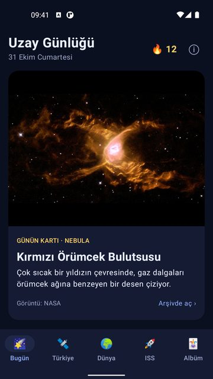
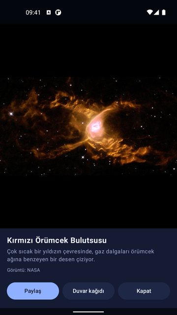
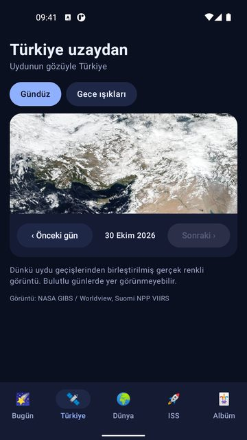
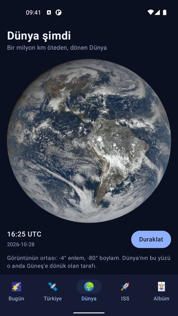
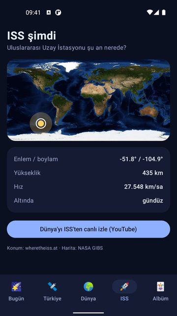
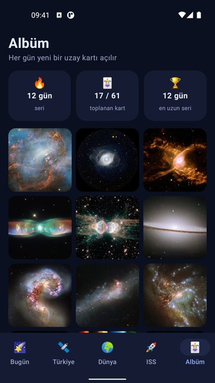

Uzay Günlüğü
Her gün yeni bir uzay kartı, Türkiye'nin uydu görüntüsü, dönen Dünya ve ISS.
Uzay Günlüğü, her gün seni yeni bir uzay fotoğrafıyla karşılar: nebulalar, galaksiler, Güneş, gezegenler, uydular ve Dünya. Her kartın yanında sade bir Türkçe not var; kartı büyütebilir, arkadaşlarınla paylaşabilir ya da duvar kağıdı yapabilirsin.


Ekran görüntüleri






Özellikler
Günün uzay kartı: seçilmiş, birbirinden güzel uzay görüntüleri ve kısa bir Türkçe açıklama
Günün astronomi fotoğrafı için tek dokunuşla bağlantı
"Bu hafta gökyüzünde": Dünya'ya yaklaşan asteroitler; mesafe Ay ile, boyut otobüs ve futbol sahasıyla kıyaslanır
Her gün gelerek seri yap, kartları albümünde topla
Uydunun gözüyle Türkiye: dünün gerçek renkli görüntüsü; bulutları, Karadeniz'i, Ege'yi ve Akdeniz'i uzaydan gör
Önceki günlere geri git; "Gece ışıkları" ile şehirlerin geceleri nasıl parladığına bak
Bir milyon kilometre öteden çekilmiş görüntülerle dönen Dünya; oynat, duraklat
Uluslararası Uzay İstasyonu şu an nerede? Dünya haritasında anlık konum, yükseklik ve hız
İstasyondan canlı yayın bağlantısı
Açtığın her kart albüme eklenir, seri günlerini sayar
Kartlar çevrimdışıyken de açılır
Görüntüler ve veriler NASA ve ortaklarının herkese açık yayınlarından alınır; her kartta kaynak belirtilir. Uzay Günlüğü bağımsız bir uygulamadır, NASA ile bağlantısı ya da onayı yoktur. Bilgiler eğlence ve genel bilgilendirme amaçlıdır; asteroit verileri bir tehlike uyarısı değildir. Uygulama ücretsizdir ve reklam içerir. Hesap açmak gerekmez, konum izni istemez. Evrene her gün bir pencere aç.